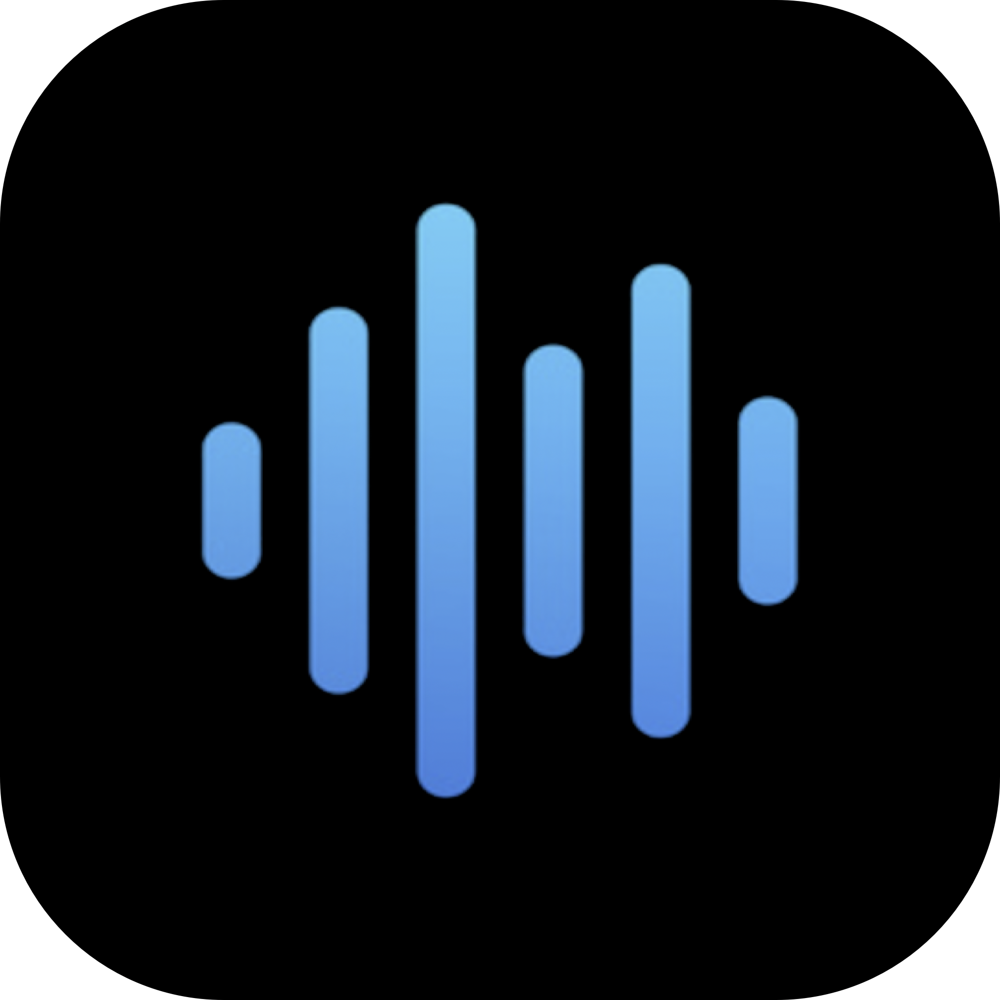

QuickTTS
Speak selected text from the menu bar. On your Mac. No API key.
Download for macOS- Menu bar only A speaker icon in the menu bar. It does not stay in the Dock.
- Option+` The default shortcut speaks whatever text is selected.
- Two qualities Pick a voice, then fast or best quality. Speech stays on this Mac.
Install
- Open QuickTTS.dmg.
- Drag QuickTTS onto Applications.
- Open QuickTTS from Applications.
- If macOS says it cannot open the app, right-click QuickTTS, choose Open, then Open again. The app is not notarized with Apple.
Allow QuickTTS once under System Settings → Privacy & Security → Accessibility and Input Monitoring. That lets the shortcut read the selection in every app.